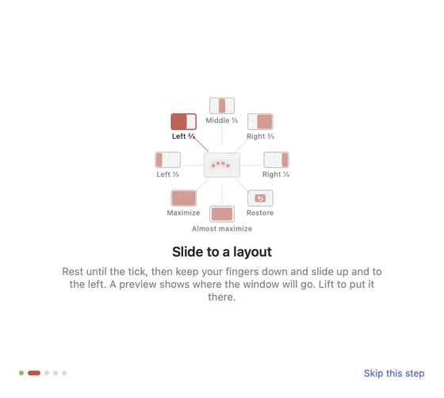

Window gestures
Rest four fingers on a window until you feel a tick, then:
-
Slide all four to snap the window into place. There are eight directions, and you see where it will go before you lift.
-
Lift to two fingers to resize it from the nearest corner.
-
Keep one finger down to drag it around. Flick sideways for half the screen, or diagonally for a quarter.
Three or five fingers work too. Settings › Windows has a short walk-through to practise with.
